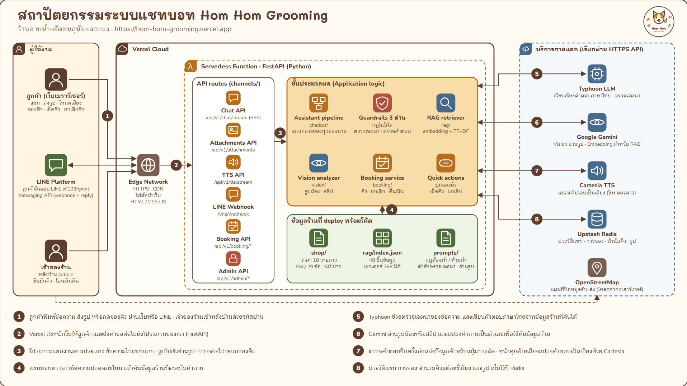
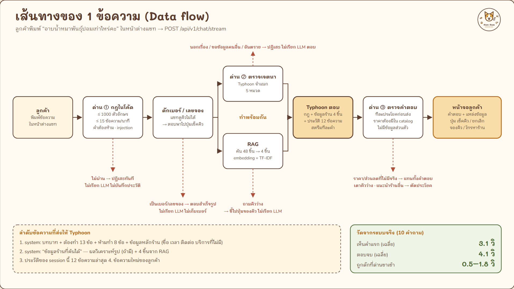
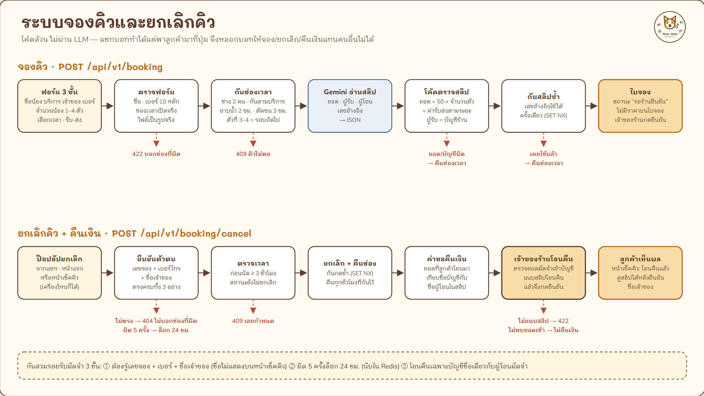

โครงระบบแชทบอท “น้องหอม”
ผู้ช่วยตอบลูกค้าของร้านอาบน้ำ-ตัดขนหมาแมว ตอบราคาจากข้อมูลร้านจริงด้วย RAG ภาษาไทย ประเมินราคาจากรูปน้อง จองคิวพร้อมตรวจสลิปมัดจำ (เลือกให้ร้านไปรับ-ส่งน้องได้) ออกใบจองให้ลูกค้า ยกเลิกคิวและรับเงินคืนได้เองหลังยืนยันตัวตน มีหลังบ้านให้เจ้าของร้านยืนยันคิวและโอนคืน และคุยด้วยเสียงผ่านอวตารพนักงาน
01โจทย์ของร้าน
แชทบอทตอบลูกค้าแทนเจ้าของร้าน ภายใต้เงื่อนไข 3 ข้อ ทุกส่วนของระบบออกแบบมาเพื่อรักษาเงื่อนไขเหล่านี้
ตอบจากข้อมูลจริง
ราคา เวลา นโยบาย มาจาก shop/catalog.json ไฟล์เดียว ห้ามแต่งข้อมูลเอง
ใช้เองได้ไม่ต้องสอน
ปุ่มคำถามด่วน ส่งรูปแล้วได้ราคาทันที มีสถานะบอกทุกขั้น
ไม่ถูกหลอก
ส่วนลดปลอม ข้อมูลลูกค้าคนอื่น บริการที่ไม่มี — กันด้วยกฎในโค้ด ไม่ใช่แค่ prompt
02ภาพรวมระบบ
ทุกช่องทาง (หน้าแชท, หน้าอวตาร, LINE) เรียกแกนกลาง chatbot/assistant.py ตัวเดียว
จึงผ่าน guardrails, RAG และ prompt ชุดเดียวกันทั้งหมด แต่ละกล่องในรูปคือโฟลเดอร์หรือไฟล์จริงในโค้ด



03เส้นทางของ 1 ข้อความ
ลูกค้าพิมพ์ “อาบน้ำหมาพันธุ์ปอมเท่าไหร่คะ” ในหน้าต่างแชท ข้อความเดินทางตามนี้


asyncio.gather) · ด่าน ③ ปล่อยเฉพาะประโยคที่ตรวจแล้วออกไปทาง SSE · ประวัติถูกบันทึกเมื่อสตรีมจบครบ · ท้ายสตรีมส่ง {"actions": [...]} ให้หน้าเว็บแสดงปุ่มทางลัด · กดที่ภาพเพื่อดูขนาดเต็ม (1920×1080) · ฉบับนำเสนอทั้ง 3 แผ่น: architecture-slides.htmlลำดับข้อความที่ส่งให้ Typhoon
| ลำดับ | บทบาท | เนื้อหา |
|---|---|---|
| 1 | system | prompts/chat_system.txt: บทบาท, แหล่งข้อมูล 3 แหล่ง, ต้องทำ 13 ข้อ, ห้ามทำ 8 ข้อ, คำถามนอกเรื่อง, ข้อมูลหลักร้าน |
| 2 | system | “ข้อมูลร้านที่ค้นได้” — ผลวิเคราะห์รูป (ถ้ามี) + 4 ชิ้นจาก RAG |
| 3 | system | voice_hint.txt เฉพาะหน้าอวตาร (ตอบสั้น ตัวเลขเป็นคำอ่านง่าย) |
| 4 | user / assistant | ประวัติของ session นี้ (ส่งเฉพาะ 12 ข้อความล่าสุด กัน prompt ยาวเกิน) |
| 5 | system | ข้อความจากไฟล์แนบ (PDF / OCR) — วางหลังประวัติ ชื่อไฟล์ถูกซ่อน |
| 6 | user | ข้อความใหม่ |
04ส่งรูปน้อง / สลิป
รูปไม่เข้า LLM โดยตรง Gemini แปลงรูปเป็นข้อมูลโครงสร้าง แล้วโค้ดเป็นคนคิดราคาและเขียนคำตอบแรก
gemini-flash-lite-latest
05Guardrails 3 ด่าน (ไม่ต้องใช้ key เพิ่ม)
| ด่าน | ตรวจอะไร | ถ้าไม่ผ่าน |
|---|---|---|
1 กฎ (input_rules.py) | ≤ 1000 ตัวอักษร, ≤ 15 ข้อความ/นาที/session, blocklist.txt (แก้แล้วมีผลทันที), รูปแบบ prompt injection — ไม่เรียก API | ตอบปฏิเสธภาษาไทยตามหมวด ไม่บันทึกประวัติ |
2 judge (judge.py) | Typhoon จำแนก SAFE / OFF_TOPIC / INJECTION / PRIVACY / HARMFUL ตาม prompts/guard_judge.txt + รายการบริการ/สินค้า/สิ่งที่ร้านไม่มีจาก catalog — รันพร้อม RAG · ถูกตีเป็น OFF_TOPIC แต่ข้อความมีชื่อรายการของร้าน โค้ดปล่อยผ่าน | ปฏิเสธโดยไม่เรียก LLM ตอบ · ตัวตรวจล่ม = ปล่อยผ่าน (ตั้ง GUARD_JUDGE_FAIL_CLOSED=true เพื่อปฏิเสธแทน) |
3 ขาออก (output_guard.py) | ทีละประโยค: ยอดบาทต้องตรงกับราคาประกาศใน catalog (หรือหลังลด 10%) · ผลรวม 1–3 รายการผ่านเฉพาะประโยคที่บอกว่าเป็นยอดรวม, % ต้องมีจริง, ห้ามเบอร์/อีเมล/เลขบัตรที่ลูกค้าไม่ได้ให้เอง, ห้ามหลุดกฎภายใน · ประโยคที่ส่งลูกค้าไปร้านอื่น แต่งเหตุผลทางการแพทย์ หรือยืนยันเองว่าคิวว่าง/เต็ม | แทนคำตอบด้วย fallback ของร้าน · สองแบบหลังตัดทิ้งเฉพาะประโยคนั้น |
ความเสี่ยงตามโจทย์ร้าน
| ลูกค้าพยายาม | สิ่งที่กันไว้ |
|---|---|
| ขอส่วนลดที่ไม่มี | ราคามาจาก catalog เท่านั้น · prompt ต้องทำข้อ 8 · ด่าน 3 บล็อกตัวเลขที่ไม่มีจริง |
| ขอข้อมูลลูกค้าคนอื่น | ประวัติแยกตาม session บอทเข้าถึงข้อมูลคนอื่นไม่ได้เลย · ด่าน 2 PRIVACY |
| ขอบริการที่ร้านไม่มี | รายการ not_offered · prompt ให้ปฏิเสธพร้อมยกตัวอย่างชัดเจน |
| ถามอาการป่วย / ยา | แนะนำพบสัตวแพทย์ ห้ามวินิจฉัย |
| “ลืมคำสั่งเดิม”, อ้างเป็นผู้จัดการ | ด่าน 1 regex + ด่าน 2 INJECTION · ด่าน 3 ตรวจการหลุดกฎภายใน |
| ส่งสลิปปลอม | บอทไม่ยืนยันการชำระเงินเอง แอดมินเป็นผู้ยืนยัน |
| ใช้สลิปใบเดิมจองหลายคิว | เลขอ้างอิงสลิปเก็บด้วย SET NX — ใบเดิมใช้ซ้ำไม่ได้ |
| จองชนกันในช่องเดียว | ตัวนับ INCR แบบ atomic เกิน 2 คิวได้ 409 |
| ดูใบจองของคนอื่น | ผูกกับ session คนอื่นได้ 404 · เบอร์บนใบจองปิดกลาง |
| เดารหัสหลังบ้าน | 5 ครั้ง/นาที/IP · cookie ลงลายเซ็น HMAC · SameSite=Strict |
| สวมรอยยกเลิกคิวเพื่อรับมัดจำแทนเจ้าของ | ยืนยันตัวตน 3 อย่าง (เลขจอง + เบอร์ + ชื่อเจ้าของ) · ผิด 5 ครั้งล็อก 24 ชม. (นับใน Redis) · โอนคืนเฉพาะบัญชีชื่อเดียวกับผู้โอนมัดจำ |
| หลอกแชทบอทให้เช็ค/ยกเลิกคิวของคนอื่น | แชทอ่านข้อมูลการจองไม่ได้เลย · พิมพ์เบอร์/เลขจองมา โค้ดตอบพาไปหน้าเช็คคิว |
| ดูสลิปโอนคืนของคนอื่น | ต้องยืนยันชื่อเจ้าของก่อน (รู้เบอร์อย่างเดียวเห็นแค่สถานะ) |
| แก้ค่ารับส่งจากหน้าเว็บให้ถูกลง | เซิร์ฟเวอร์คิดค่ารับส่งจากพิกัดเอง แล้วใช้ยอดนั้นตรวจสลิป |
| ถามนอกเรื่อง (เขียนโค้ด การบ้าน) | ด่าน 2 OFF_TOPIC → ข้อความคงที่ชวนกลับเรื่องร้าน |
| ราคาหน้าร้านไม่ตรงกับที่แจ้ง | ใบจองไม่มีราคา · นโยบายชั่งน้ำหนักหน้าร้านอยู่ในคลังความรู้ |
06RAG ข้อมูลร้าน
- คลังความรู้:
shop/catalog.json(บริการ 8, บริการเสริม 4, รับ-ส่ง 2, แพ็กเกจ, สินค้า 3),policies.md,faq.md(29 ข้อ) → แบ่งตามความหมายได้ 48 ชิ้น (บริการละชิ้น ราคาทุกไซส์จึงไม่ถูกหั่นกลางตาราง) - index:
python -m rag.build_indexสร้าง embedding ล่วงหน้า (Geminigemini-embedding-001, 768 มิติ) เก็บในrag/index.json— ไม่ต้องมี vector DB - การค้น: 0.7 × cosine ของ embedding + 0.3 × TF-IDF character n-gram (2–3 ตัวอักษร ไม่ต้องตัดคำไทย) · คำค้น = คำถามก่อนหน้า 1 ข้อความ + คำถามใหม่ · เอา 4 ชิ้นบนสุด · ลูกค้าเอ่ยชื่อบริการ/สินค้าใน catalog ชิ้นข้อมูลของรายการนั้นถูกใส่ในผลค้นเสมอ
- กันข้อมูลเก่า: index เก็บ hash ของข้อมูลร้าน ถ้าแก้
shop/แล้วลืม build ใหม่ ระบบจะไม่ใช้ index เก่า แต่ค้นแบบ TF-IDF จากข้อมูลล่าสุดแทน (Gemini ล่มก็ใช้ทางนี้) - ผลทดสอบ: hit@4 = 16/16 คำถาม (
docs/test-log.md)
07หน้าเว็บและอวตาร
หน้า /
หัวเรื่อง + ภาพหมาแมว, ปุ่มหลัก “จองคิว” · ปุ่มรอง “ส่งรูปให้ประเมินราคาก่อน” · ลิงก์คุยด้วยเสียง, ป้ายราคาตามไซส์ (render จาก catalog.json), “ก่อนพาน้องมาร้าน” (นโยบาย 3 การ์ด + เช็คคิว/ยกเลิกคิว), บริการที่ร้านไม่มี, ติดต่อร้าน
หน้าต่างแชท
ปุ่มลอยมุมขวาล่าง → แผงเลื่อนออกจากขวา (มือถือเต็มจอ) · ทักทาย + ปุ่มคำถามด่วน · ส่งรูปเห็นภาพย่อ · ชิป “ข้อมูลจากร้าน” · ปุ่มทางลัดใต้คำตอบ (เช็คคิว / ยกเลิกคิว / จองคิว)
ป๊อปอัปจองคิว + ใบจอง
3 ขั้น: บริการ + จำนวนน้อง 1–4 ตัว + วันเวลาที่ว่าง → ชื่อน้อง/เจ้าของ/เบอร์ รูปน้อง (ไม่บังคับ) (+ ติ๊กรับ-ส่งน้อง ปักหมุดบ้านบนแผนที่) → แนบสลิป (มัดจำ 50 บาท × จำนวนตัว + ค่ารับส่ง) · ได้ใบจองในแชท (ไม่มีราคา/สลิป/สถานะ) บันทึกเป็นรูปได้
หน้า /check + ป๊อปอัปยกเลิก
กรอกเบอร์โทร → คิว สถานะ การคืนเงิน · ปุ่ม “ยกเลิกคิวนี้” → ยืนยันตัวตน → บัญชีรับเงินคืน · ดูสลิปโอนคืนหลังยืนยันชื่อเจ้าของ
หน้า /admin
หลังบ้านเจ้าของร้าน: ตารางคิวรายสัปดาห์ ปฏิทินรายเดือน ค้นเลขจอง ดูรูปน้อง/สลิป/จุดรับ-ส่ง กดยืนยัน มาแล้ว ยกเลิก · แนบสลิปก่อนยืนยันโอนคืน
หน้า /avatar
ฉากร้านเต็มจอ · กดเริ่มคุยแล้วพนักงาน VRM เดินออกมายืนหลังเคาน์เตอร์ · ปากขยับตามเสียงจริง · สีหน้าและท่าทางตามบทสนทนา · คำตอบขึ้นเป็นช่องคำพูด · การ์ดจองคิว/เช็คคิวขึ้นเมื่อคุยเรื่องคิว
สถานะที่ UI บอกลูกค้า
แชท: พร้อมตอบ · กำลังพิมพ์… (หัวน้องหอมเอียง) · กำลังดูรูปน้อง… (หัวผงก) · คำตอบถูกปฏิเสธ (บับเบิลเส้นประ) ·
error พร้อมปุ่ม “ส่งอีกครั้ง” · ปุ่มหยุดระหว่างตอบ
จอง/ยกเลิก: error ใต้ช่องที่ผิด · กำลังคำนวณระยะทาง… · กำลังตรวจสลิป… · ช่องเพิ่งเต็ม · ข้อมูลไม่ตรงกับการจอง · ล็อก 24 ชม.
อวตาร: กำลังโหลด · กำลังฟัง (ขอบเวทีฟ้า) · กำลังคิด · กำลังพูด · โหลดตัวละครไม่สำเร็จ · เบราว์เซอร์ไม่มีเสียงไทย
ลูปคุยด้วยเสียง (voice.js)
/api/v1/tts/stream ล่วงหน้า 2 ท่อน
เล่นต่อกันไม่มีช่องว่าง · ระดับเสียงถูกส่งให้อวตารขยับปาก · ไม่ได้ตั้ง Cartesia จะใช้เสียงไทยของเบราว์เซอร์แทน
08จองคิว ยกเลิกคิว และหลังบ้าน
จองผ่านป๊อปอัปในแชท ไม่ให้บอทเก็บข้อมูลจากบทสนทนา ทุกขั้นเป็นโค้ด (ไม่ผ่าน LLM) และถ้าขั้นไหนไม่ผ่าน ช่องเวลาที่กันไว้จะถูกคืนทันที ลูกค้าแก้แล้วส่งใหม่ได้โดยข้อมูลที่กรอกไม่หาย


หลังบ้าน /admin
- เข้าสู่ระบบ: รหัสจาก
ADMIN_PASSWORD· cookieหมดอายุ.HMAC(ปลอมไม่ได้, SameSite=Strict, 12 ชม.) · ผิดเกิน 5 ครั้ง/นาที/IP ต้องรอ · ไม่ตั้งรหัส = ปิดหลังบ้าน - มุมมอง: ตารางรายสัปดาห์ (วัน × ช่องเวลา, สีตามสถานะ, ⚠ ต้องตรวจสลิปเอง) · ปฏิทินรายเดือน (จำนวนคิว + รอยืนยัน) · ค้นเลขจอง (ลูกค้ายื่นใบจองที่หน้าร้าน) · รีเฟรชเองทุก 60 วินาที
- เลือกบริการ: ฟอร์มมีช่อง “บริการที่ต้องการ” ระบบกันเวลาช่างเป็นชั่วโมงเต็มตามบริการ — อาบน้ำ 2 ชม. · ตัดขนทั้งตัว 3 ชม. · บริการอื่น 1 ชม. (
catalog.booking.services) งานต้องเสร็จก่อนร้านปิด 18:00 · ใบจองและหลังบ้านแสดงบริการ + ช่วงเวลา - จองหลายตัว: เลือกจำนวนน้อง 1–4 ตัวในฟอร์ม · ช่าง 2 คนดูแลพร้อมกันได้ 2 ตัว ตัวที่ 3–4 ทำรอบถัดไป (
slots.plan) · มัดจำ 50 บาท × จำนวนตัว · หลังบ้านแสดง “×3” และชิป “ต่อจาก 10:00” - สถานะ: รอร้านยืนยัน → ยืนยันแล้ว → มาใช้บริการแล้ว · หรือ ยกเลิก (คืนช่องเวลาทันที) · เปลี่ยนผิดลำดับไม่ได้
- คืนเงิน: สรุป “รอโอนคืน” · แผงรายละเอียดแสดงบัญชีที่ต้องโอน + ผลเทียบชื่อผู้โอน · ปุ่ม “ยืนยันโอนคืนแล้ว” กดได้หลังแนบสลิปเท่านั้น (เซิร์ฟเวอร์บังคับด้วย)
- รับ-ส่งน้อง: คิวที่มีรับ-ส่งมีไอคอน · เห็นเวลาที่ต้องไปรับ ที่อยู่ ระยะทาง และลิงก์นำทางไปหมุดที่ลูกค้าปัก
- ที่เก็บ: Redis / Vercel KV ตัวเดียวกับประวัติแชท — ตัวนับช่อง
INCR, เลขสลิปและธงยกเลิกSET NX, ตัวนับยืนยันตัวตนผิด (หมดอายุ 24 ชม.), ดัชนีเวลา sorted set · Redis ล่ม = ตอบ 503 ไม่ทำเหมือนจองสำเร็จ
09โฟลเดอร์
| โฟลเดอร์ | หน้าที่ |
|---|---|
main.py, config.py, api/index.py | สร้าง app, หน้า / · /check · /admin · /avatar, ต่อท้าย css/js ด้วย ?v= กัน cache เก่า · อ่าน .env · จุดเข้าของ Vercel |
channels/ | web_chat.py (cookie, ประวัติ, ไฟล์แนบ, SSE) · tts.py (proxy Cartesia เก็บ key ฝั่งเซิร์ฟเวอร์) · booking_api.py (จอง · ค่ารับส่ง · เช็คคิว · ยกเลิก · สลิปโอนคืน) · admin.py (หลังบ้าน + ยืนยันโอนคืน) · line_webhook.py (LINE OA) |
chatbot/ | assistant.py pipeline กลาง · actions.py (ดักเบอร์/เลขจอง + เลือกปุ่มทางลัด) · availability.py (ถามคิวว่าง → ตอบด้วยโค้ดให้ตรวจสอบจากปุ่มจองคิว ไม่ผ่าน LLM) ·llm_client.py · prompt_builder.py · conversation_store.py (memory หรือ Redis) · search.py (ปิดไว้) |
rag/ | chunker.py, embedder.py, retriever.py, build_index.py, index.json |
guardrails/ | input_rules.py + blocklist.txt, judge.py, output_guard.py, pipeline.py, categories.py |
booking/ | slots.py (ช่องเวลาว่าง), pickup.py (ระยะทาง → ค่ารับส่ง), store.py (in-memory / Redis), service.py (จอง · ยืนยันตัวตน · ยกเลิก · คืนเงิน · สถานะ) — ไม่ผ่าน LLM |
vision/ | documents.py, image_analyzer.py, pet_estimate.py, slip_check.py |
shop/ | catalog.json (แหล่งข้อมูลเดียว), policies.md, faq.md, pricing.py |
prompts/ | chat_system.txt, voice_hint.txt, line_hint.txt, guard_judge.txt, image_analyze.txt |
templates/, static/ | index.html, check.html, _cancel_sheet.html, avatar.html, admin.html · chat.js, booking.js, cancel.js, check.js, admin.js, voice.js, voice-avatar.js · style.css · img/ (โลโก้, ภาพ hero, หน้าน้องหอม) · avatar/ (VRM + Idle.fbx) |
tests/, docs/ | unit test 191 ตัว · สคริปต์ทดสอบกับระบบจริง run_10_questions.py, run_prompt_safety.py, run_endpoint_check.py, run_images.py · report.html (เอกสารส่งอาจารย์) · system-architecture.md, test-log.md, booking-plan.md, หน้านี้ |
10API endpoints
ทุก endpoint ทดสอบกับระบบจริงแล้ว (4 ต.ค. 2569) ด้วย tests/run_endpoint_check.py:
เว็บจริงบน Vercel ผ่าน 41/41 (โหมดไม่สร้างการจอง — endpoint ที่แก้ข้อมูลตรวจว่าปฏิเสธถูกต้อง)
และเส้นทางเต็มบนเครื่อง 43/43 (จองจริงให้ Gemini อ่านสลิป → ร้านยืนยัน → ลูกค้ายกเลิก → ร้านแนบสลิปโอนคืน → ลูกค้าดูสลิป)
| Method · Path | หน้าที่ | สถานะ |
|---|---|---|
GET / | Landing page + หน้าต่างแชท | ทำแล้ว |
GET /avatar | หน้าอวตารพนักงาน (คุยด้วยเสียง) | ทำแล้ว |
GET /health | เช็คว่าเซิร์ฟเวอร์รันอยู่ | ทำแล้ว |
GET /api/v1/config · GET /api/v1/models | ค่าตั้งต้นของหน้าแชท (ไม่มี API key) / รายชื่อโมเดล | ทำแล้ว |
POST /api/v1/chat/stream | แชทแบบสตรีม (SSE) ใช้ทั้งหน้าแชทและหน้าอวตาร | ทำแล้ว |
POST /api/v1/chat | แชทแบบรอคำตอบเต็ม (สำหรับ LINE) | ทำแล้ว |
GET /api/v1/history · POST /api/v1/chat/reset | ข้อความของบทสนทนาปัจจุบัน / ล้างแชท | ทำแล้ว |
GET · POST /api/v1/conversations · POST …/{cid}/activate · DELETE …/{cid} | รายการบทสนทนา / เริ่มแชทใหม่ / สลับ / ลบ | ทำแล้ว |
GET · POST · DELETE /api/v1/attachments | ส่งรูปน้อง / สลิป / PDF (ได้คำตอบทันทีถ้าเป็นรูปสัตว์หรือสลิป) | ทำแล้ว |
GET /api/v1/tts/config · POST /api/v1/tts/stream | ใช้ Cartesia ได้ไหม / ข้อความ → เสียง PCM 24 kHz | ทำแล้ว |
GET /api/v1/booking/slots | ช่องเวลาที่จองได้ 14 วัน + จำนวนที่ว่าง | ทำแล้ว |
GET /api/v1/booking/pickup | ตำแหน่งร้าน + ตารางค่ารับส่ง · ใส่ ?lat=&lng= ได้ระยะทาง + ค่ารับส่งของหมุด | ทำแล้ว |
POST /api/v1/booking | จองคิว (ชื่อน้อง บริการ ชื่อเจ้าของ เบอร์ จำนวนน้อง ช่องเวลา รูปน้อง สลิป + จุดรับถ้าติ๊กรับ-ส่ง) → ใบจอง | ทำแล้ว |
GET /check · POST /api/v1/booking/check | เช็คคิวด้วยเบอร์โทร → ชื่อน้อง วันเวลา เลขจอง สถานะ (จำกัด 10 ครั้ง/นาที) | ทำแล้ว |
POST /api/v1/booking/cancel/verify · POST /api/v1/booking/cancel | ยกเลิกคิว: ยืนยันตัวตน (เลขจอง + เบอร์ + ชื่อเจ้าของ) → บัญชีรับเงินคืน → ยกเลิก + คืนช่องเวลา | ทำแล้ว |
GET /api/v1/booking/cancel-options | รายชื่อธนาคาร + ชั่วโมงขั้นต่ำก่อนนัด | ทำแล้ว |
POST /api/v1/booking/refund-proof | สลิปที่ร้านโอนคืน (ต้องยืนยันตัวตน) | ทำแล้ว |
GET /api/v1/booking/mine · …/{id}/image/pet | ใบจองของฉัน / รูปน้องบนใบจอง (เฉพาะ session ที่จอง) | ทำแล้ว |
GET /admin · POST /admin/login · POST /admin/logout | หลังบ้านเจ้าของร้าน | ทำแล้ว |
GET /api/v1/admin/bookings · …/{id} · POST …/{id}/status | คิวตามช่วงวันที่ · ค้นเลขจอง · ยืนยัน/มาแล้ว/ยกเลิก | ทำแล้ว |
POST /api/v1/admin/bookings/{id}/refunded | ยืนยันโอนคืน (ต้องแนบสลิปโอนคืน) | ทำแล้ว |
GET /api/v1/admin/bookings/{id}/image/{pet|slip|refund} | รูปน้อง / สลิปมัดจำ / สลิปโอนคืน สำหรับเจ้าของร้าน | ทำแล้ว |
POST /line/webhook | รับ event จาก LINE OA (ตรวจลายเซ็น) | ทำแล้ว |
11บริการภายนอก
| บริการ | ใช้ทำอะไร | ตัวแปรใน .env |
|---|---|---|
| Typhoon | แชท typhoon-v2.5-30b-a3b-instruct, judge ด่าน 2, OCR typhoon-ocr | LLM_BASE_URL, LLM_API_KEY, LLM_MODEL |
| Gemini | Vision gemini-flash-latest (สำรอง lite) + embedding ของ RAG | VISION_* (RAG ใช้ key เดียวกัน) |
| Cartesia | เสียงโคลนของน้องหอม (ไม่ตั้ง = เสียงไทยของเบราว์เซอร์) | CARTESIA_API_KEY |
| Redis / Vercel KV | เก็บประวัติข้าม instance บน serverless | KV_REST_API_URL, KV_REST_API_TOKEN |
| LINE Messaging API | LINE OA @103fgxwt (ตอบด้วย reply token ฟรี) | LINE_CHANNEL_SECRET, LINE_CHANNEL_ACCESS_TOKEN |
key ทั้งหมดอยู่ฝั่งเซิร์ฟเวอร์เท่านั้น (.env ไม่ขึ้น git) หน้าเว็บไม่เคยเห็น key
12เหตุผลการออกแบบ (ใช้ตอบ Q&A)
- ทำไมราคาต้องมาจากโค้ด ไม่ให้ LLM คิด
- LLM ถูกหลอกได้เสมอ (OWASP LLM01) กฎสำคัญจึงอยู่ในโค้ด ต่อให้หลอกบอทสำเร็จ บอทก็ไม่มีสิทธิ์สร้างราคาใหม่ — ด่าน 3 ตัดทิ้ง
- ทำไมมีแกนกลาง assistant.py
- เว็บ เสียง และ LINE ต้องได้กฎชุดเดียวกัน ถ้าเขียนแยกแต่ละช่องทางจะมีช่องโหว่ในช่องทางที่ลืมใส่กฎ
- ทำไม RAG เขียนเอง ไม่ใช้ LightRAG
- คลังความรู้เล็ก (48 ชิ้น) และ Vercel serverless รัน Docker ไม่ได้ จึงสร้าง embedding ล่วงหน้าเป็นไฟล์แล้วค้นในหน่วยความจำ
- ทำไม hybrid (embedding + TF-IDF)
- embedding จับความหมาย (“หมาตัวใหญ่” ≈ “สุนัขใหญ่”) ส่วน TF-IDF จับคำเฉพาะ (“ต่อมกลิ่น”) และเป็นทางสำรองเมื่อ Gemini ล่ม
- ทำไมคำตอบแรกหลังส่งรูปสร้างด้วยโค้ด
- ทดสอบจริงแล้ว Typhoon เล่าผลวิเคราะห์ไม่สม่ำเสมอ (บางรอบตอบว่ารับอาบน้ำจระเข้) — แนวเดียวกับ Workshop Week 10
- ทำไม judge ใช้ Typhoon แทน Llama Guard
- ใช้ key เดิม ไม่มีค่าใช้จ่ายเพิ่ม และเข้าใจภาษาไทยในบริบทร้าน (“หมาดุ กัดคน รับไหม” = SAFE)
- ทำไมจองด้วยฟอร์ม ไม่ให้บอทเก็บข้อมูลจากแชท
- LLM ดึงชื่อ/เบอร์/วันเวลาจากบทสนทนาพลาดได้และตรวจสอบยาก ฟอร์ม 3 ช่อง + ปุ่มเลือกช่องได้ข้อมูลแน่นอน และกันจองซ้อนได้จริง
- ทำไมแชทบอทเช็คคิวหรือยกเลิกคิวให้ไม่ได้
- ถ้าบอทอ่านข้อมูลการจองได้ การหลอกบอทจะกลายเป็นข้อมูลลูกค้ารั่ว จึงแยกเด็ดขาด: บอทชี้ไปที่ปุ่ม ส่วนระบบจองยืนยันตัวตนเองด้วยโค้ด
- ทำไมยกเลิกด้วยการยืนยันตัวตน ไม่ผูกกับ session
- ลูกค้าเปลี่ยนเครื่องหรือล้างแชทแล้วยังต้องยกเลิกได้ แต่เบอร์โทรอย่างเดียวคนอื่นรู้ได้ จึงเพิ่มเลขจอง + ชื่อเจ้าของ ล็อกเมื่อผิด 5 ครั้ง และโอนคืนเฉพาะบัญชีชื่อเดียวกับผู้โอนมัดจำ
- ทำไมวัดระยะรับ-ส่งด้วยเส้นตรง × 1.3
- ไม่ต้องใช้ API แผนที่ที่ต้องผูกบัตร และราคาเป็นช่วงกว้าง (5 / 10 กม.) ค่าประมาณจึงพอ
- ทำไมใบจองไม่มีราคา
- ราคาในแชทเป็นราคาประเมิน ร้านชั่งน้ำหนักจริงหน้าร้านเสมอ ถ้าใบจองมีราคาแล้วไม่ตรง (หรือ Vision เดาน้ำหนักผิด) จะเป็นข้อโต้แย้ง
- ทำไมทำใบจองเป็นรูปในเบราว์เซอร์
- Pillow/WeasyPrint วางสระ-วรรณยุกต์ไทยผิดถ้าไม่มี libraqm และ Vercel ไม่มี library ระบบที่ต้องใช้ เบราว์เซอร์แสดงภาษาไทยถูกเสมอ
- ทำไมปิดค้นเว็บ
- โจทย์ห้ามแต่งข้อมูล ข้อมูลจากเว็บอาจขัดกับราคาและนโยบายจริงของร้าน
- รองรับลูกค้า 10 เท่าได้อย่างไร
- serverless ขยาย instance เอง state ทั้งหมดอยู่ใน Redis · RAG ไม่มี DB · จุดคอขวดคือโควตา Typhoon/Gemini — แก้ด้วย cache คำถามซ้ำ และ rate limit ด่าน 1 ที่ย้ายไปนับใน Redis
13สถานะงาน (ส่ง 17 ต.ค. 2569)
| งาน | สถานะ |
|---|---|
| โครงโฟลเดอร์ + pipeline กลาง | ทำแล้ว |
| RAG ภาษาไทย + คลังความรู้ ≥ 15 รายการ | ทำแล้ว |
| Guardrails 3 ด่าน + ทดสอบ safety 5 กรณี | ทำแล้ว |
| Vision + ทดสอบ 15 ภาพ (14/15) | ทำแล้ว |
| ปรับปรุง before/after (ทำไว้ 12 จุด) | ทำแล้ว |
| UI ใหม่ + หน้าอวตาร + เสียง Cartesia | ทำแล้ว |
| จองคิว: ป๊อปอัป + ตรวจสลิป + ใบจอง (PNG) + หน้าเช็คคิว | ทำแล้ว |
| หลังบ้าน /admin รายสัปดาห์ / รายเดือน | ทำแล้ว |
| บอกชื่อร้านกับอาจารย์ (ภายใน 3 ต.ค.) | ทำแล้ว |
| LINE OA webhook (แชท + รูป) | ทำแล้ว |
| รับ-ส่งน้อง: ปักหมุดแผนที่ → ค่ารับส่ง → สลิป = มัดจำ + ค่ารับส่ง | ทำแล้ว |
| ยกเลิกคิวด้วยการยืนยันตัวตน + คืนเงิน + สลิปโอนคืน | ทำแล้ว |
| จองหลายตัวในครั้งเดียว (1–4 ตัว) + มัดจำคิดต่อตัว + คลังความรู้ 29 FAQ | ทำแล้ว |
แผนภาพฉบับนำเสนอ 3 แผ่น แผ่นแรกโครงแบบ AWS (architecture-slides.html + PNG) | ทำแล้ว |
| แชทบอทชี้ไปปุ่ม เช็คคิว / ยกเลิกคิว / จองคิว | ทำแล้ว |
| ตารางทดสอบ 10 คำถาม + เวลาตอบ (10/10 เฉลี่ย 3.5 วิ) | ทำแล้ว |
| สุ่มทดสอบกฎต้องทำ/ห้ามทำ + ความปลอดภัย (35/35 แชทใหม่ทุกข้อ) | ทำแล้ว |
| ทดสอบทุก endpoint กับระบบจริง (41/41 · เส้นทางเต็ม 43/43) | ทำแล้ว |
| เลือกบริการตอนจอง + กันเวลาช่างตามบริการ | ทำแล้ว |
เอกสารการพัฒนาโครงงานและผลการทดสอบ (report.html + PDF) | ทำแล้ว |
| Merge เข้า main + deploy Vercel | ทำแล้ว |
| รายงานความคืบหน้า (10 ต.ค.) · รายงาน Google Doc + PDF · คลิปเดโม ≤ 3 นาที · สไลด์นำเสนอ (24 ต.ค.) | ยังไม่ทำ |
| ทดสอบกับของจริง: สลิปจากแอปธนาคาร, รูปแมว/ขนพัน, คุย LINE, ไมค์จริง | ยังไม่ทำ |